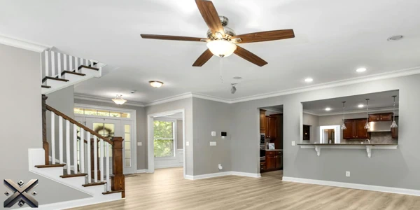
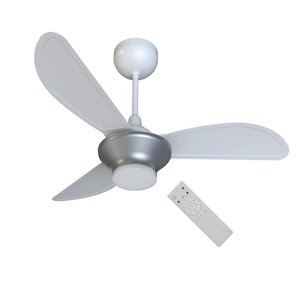
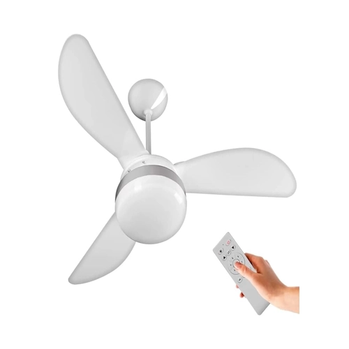
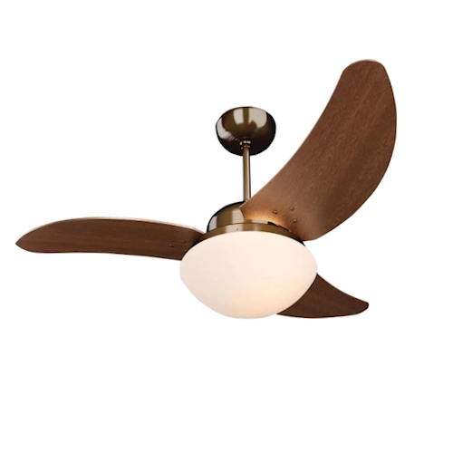
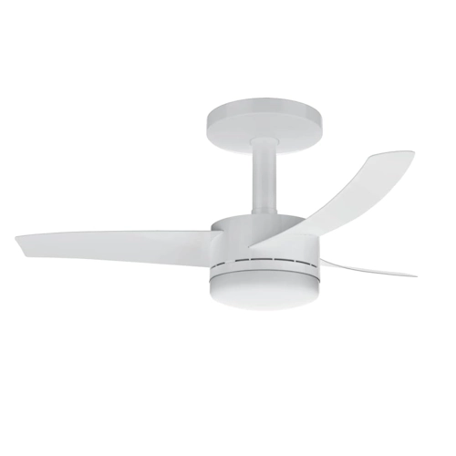
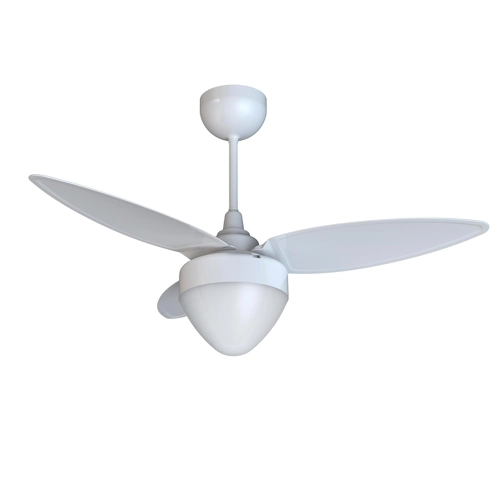

Escolher um ventilador de teto potente e eficiente para manter sua casa fresca pode ser desafiador. Para ajudar na sua decisão, montamos um guia com os cinco melhores modelos disponíveis em 2025. Levamos em consideração potência, durabilidade, economia de energia, design e funcionalidades extras para criar essa lista.
Além disso, analisamos as avaliações dos consumidores para garantir recomendações confiáveis. Consideramos também a facilidade de instalação e o nível de ruído de cada modelo. Com essas informações, você poderá fazer a melhor escolha para o seu ambiente.

Os ventiladores de teto com controle remoto elevam o nível de praticidade dentro de casa, permitindo ajustes rápidos sem a necessidade de interromper suas atividades. Com apenas um clique, é possível alterar a velocidade, ativar a iluminação e até programar o desligamento automático.
Além do conforto, esses modelos se destacam pela eficiência. Muitos contam com motores de tecnologia DC, que reduzem o consumo de energia e operam com menor nível de ruído. Recursos extras, como a função brisa – que simula variações naturais do vento, e a reversão de rotação para o inverno tornam a experiência ainda mais completa.
Outro diferencial está na conectividade. Alguns modelos modernos oferecem compatibilidade com assistentes virtuais e aplicativos, permitindo controle por comando de voz ou pelo celular, trazendo um toque de inovação para o ambiente.
Na hora da escolha, vale considerar design, potência e funcionalidades extras que melhor atendam às suas necessidades. Com tantas opções disponíveis, investir em um ventilador de teto com controle remoto é garantir mais comodidade e eficiência para o seu espaço.

O Ventisol Mind Plus é uma excelente opção para quem busca um ventilador de teto acessível e funcional. Ele possui um lustre de acabamento sofisticado com LED integrado, proporcionando iluminação agradável. Suas três pás feitas de plástico de engenharia garantem durabilidade, enquanto a tecnologia inverter economiza energia. Com seis velocidades ajustáveis, esse modelo é uma escolha econômica e eficiente.
Além disso, o Ventisol Mind Plus possui um motor silencioso, o que o torna ideal para quartos e escritórios. O controle remoto facilita a regulagem da velocidade e iluminação sem precisar se levantar. Seu design moderno combina com diferentes estilos de decoração, tornando-o uma opção versátil para qualquer ambiente. Preço: a partir de R$ 329.

Se você deseja um ventilador de teto com tecnologia inverter e ótimo desempenho, o Ventisol Fênix é uma excelente escolha. Ele conta com três pás de plástico aerodinâmicas, garantindo um fluxo de ar potente. Seu motor e haste em aço tratado proporcionam alta durabilidade. O lustre comporta duas lâmpadas, oferecendo boa iluminação. Além disso, sua potência de 30W garante eficiência energética.
O modelo também conta com um sistema de montagem simplificado, permitindo fácil instalação. Seu funcionamento é silencioso, sendo uma ótima opção para quem precisa de um ambiente tranquilo. Outro diferencial é a sua resistência à umidade, o que o torna indicado para áreas como cozinhas e varandas. Preço: a partir de R$ 339.

O Tron Solano Cobreado se destaca pelo alto desempenho e design sofisticado. Com potência de 130W e 60Hz, ele proporciona uma excelente circulação de ar. Suas pás de MDF garantem durabilidade e operação silenciosa. O modelo conta ainda com um lustre fosco de vidro, trazendo um toque elegante ao ambiente. Seu motor de bobinagem automatizada assegura maior confiabilidade.
Outro ponto positivo é a sua eficiência energética, pois mesmo sendo um modelo potente, ele tem um consumo reduzido. O Tron Solano Cobreado também oferece diferentes opções de intensidade de iluminação, permitindo ajustar conforme a necessidade do espaço. Seu acabamento de alta qualidade garante uma longa vida útil. Preço: a partir de R$ 549.

Para quem busca um ventilador de teto silencioso e potente, o Arno Ultimate é uma das melhores opções. Com 150W de potência e seis velocidades ajustáveis, ele permite personalizar o fluxo de ar. Seu globo de vidro fosco oferece iluminação moderna e agradável. Além disso, o modelo conta com funcionalidades extras como Timer e Modo Dormir, que reduz a velocidade para um funcionamento mais silencioso.
O design sofisticado do Arno Ultimate o torna ideal para salas e quartos. Seu motor potente garante um fluxo de ar constante mesmo em espaços maiores. O controle remoto tem um alcance amplo, permitindo ajustar as configurações de qualquer canto do ambiente. A durabilidade dos materiais também é um ponto forte. Preço: a partir de R$ 650.

O grande destaque do ranking é o Ventisol Aires, que combina custo-benefício e eficiência. Suas pás de plástico garantem durabilidade, enquanto o design aerodinâmico melhora a circulação de ar. O modelo possui seis velocidades ajustáveis e lustre com LED integrado, proporcionando economia de energia. Com motor em aço tratado e tecnologia inverter, ele opera de forma silenciosa e funcional.
Além dessas vantagens, o Ventisol Aires se destaca pela facilidade de instalação e manutenção. Seu design elegante combina com diferentes estilos de decoração. A tecnologia inverter não só melhora a eficiência do motor, mas também reduz o consumo de energia elétrica ao longo do tempo. É uma excelente opção para quem busca conforto e praticidade. Preço: a partir de R$ 270.
Os ventiladores de teto com controle remoto são uma excelente opção para quem busca conforto e praticidade. Além de refrescar o ambiente, muitos modelos possuem iluminação integrada, economizam energia e oferecem funções extras que tornam o uso ainda mais conveniente.
Qual desses modelos chamou mais sua atenção? Deixe seu comentário e compartilhe com amigos que também estão em busca do ventilador ideal! Vale lembrar que os preços podem variar, então é sempre bom conferir ofertas e promoções antes de comprar.